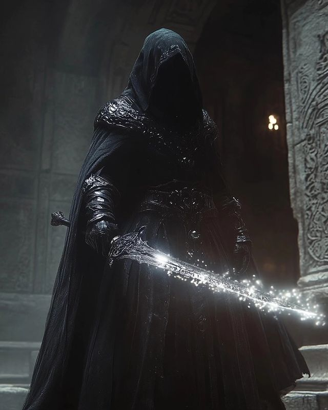

| Title | Overseer |
| Power | 80/100 |
| Domain | Pure Being |
| Role | Authority |
Kosmos, known formally as the Omniversal Overseer, is a high-ranking cosmic authority within the Godthrone cycle. He is a direct manifestation of universal oversight and exists to ensure the integrity of reality.
Unlike standard entities, Kosmos possesses the unique ability to perceive the "Source Code" of the omniverse, allowing him to identify and neutralize corruptive dark mana before it causes systemic failure.
Beyond the veil of mortal comprehension. Reality obeys with the desperation of a condemned prisoner begging for mercy. Becomes a death sentence that cannot be appealed, reversed, or escaped. Doesn't simply kill, it authors new definitions of pain that transcend physical limitations.
Kosmos typically manifests as a tall, imposing figure with an aura of absolute stillness. His features are clinical and sharp, reflecting his keen-minded nature. He is often seen adorned in ceremonial armor that glows with a faint, pulsing light, signifying his connection to the omniversal leylines.
His eyes are his most striking feature, capable of shifting colors as he analyzes different layers of reality. When engaging with the void, his physical form becomes semi-transparent, revealing a core of pure energy that sustains his existence across dimensions.
Kosmos appeared as a corrective force when the first world cycle was found desperately inadequate. Unlike beings birthed through natural leylines, Kosmos exists beyond standard biological or digital origins.
He spent eons observing the collapsing geometry of failing dimensions, developing techniques to stabilize the Mere before the system could delete it.
Kosmos possesses a clinical and keen-minded perspective on reality. He remains detached from mortal squabbles, but maintains a fierce loyalty to the concept of existence itself.
He acts altruistically to prevent universal deletion protocols, often stepping in when the "system" attempts to erase essential anomalies. His decision-making is purely logical, yet driven by a deep-seated desire to preserve life.
As the Overseer, Kosmos can cast magic without the need for physical components or rituals. He perceives the raw "source code" of the omniverse, allowing him to notice dark shrouds and corruption within the reality-walls.
His power level is recorded at 80/100, marking him as an elite entity capable of resisting divine protocols and manipulating the void to repair fractured soul-fragments.
In the chronicles, Kosmos encountered a sector being bullied by system-remnants. After intervening, he established that discarded sectors must stand up to the High Gods. During his traversal of the void-archives, Kosmos's awareness activated fully, noticing a dark shroud surrounding the leyline carriages.
Following this corruption onto a Thunder Rail, Kosmos diverted a massive system crash by redirecting the energy into a divine monument. This led to a temporary suspension from formal duties, during which Kosmos refined his void manipulation in isolation.
Later, he was tasked with repairing reality-walls damaged by system glitches. Encountering an aggressive Exiliumarch, Kosmos’s gaze identified the same dark mana. Through a combined effort, they subdued the entity, leading Kosmos to seek deeper truths in the ancient archives.